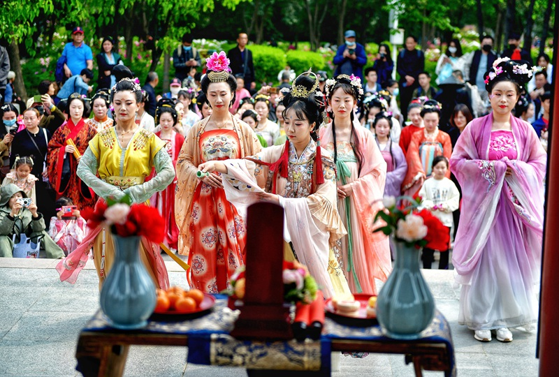
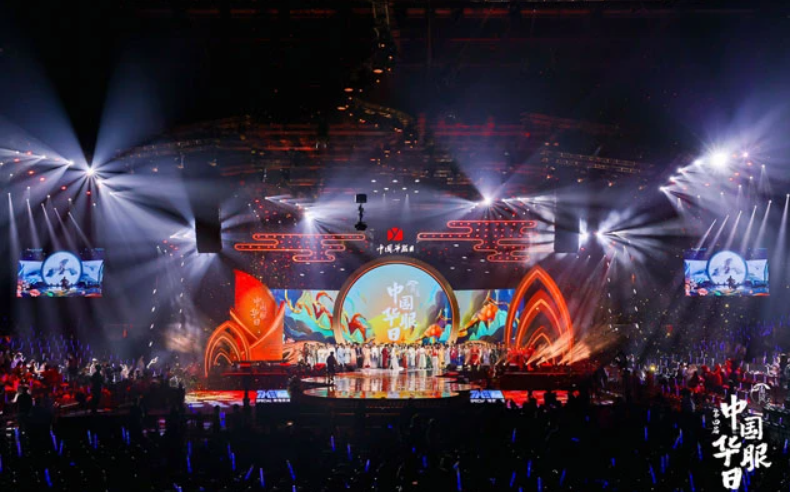
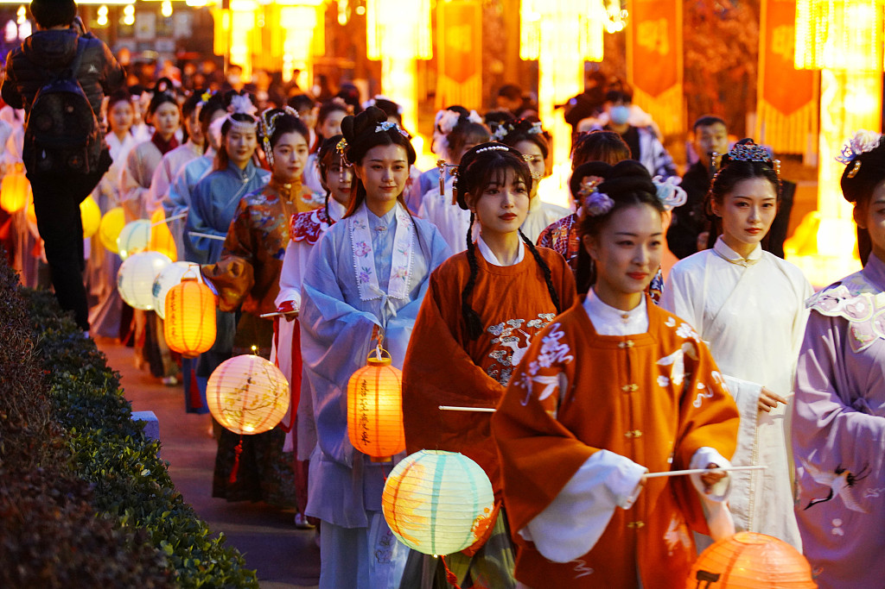

The number of Hanfu festivals and Hanfu events has gradually risen over the past decade or so of Hanfu revival.Not only in China, but also around the world, Hanfu enthusiasts organize hanfu day from time to time.Hanfu events are not only an important channel for more people to learn about hanfu, but also a great way for Hanfu lovers to meet like-minded people and discuss traditional culture together.
Flower Festival
The Flower Festival, commonly known as the "Flower God Festival", is held on the second day of the second month of the lunar calendar. Wearing hanfu is one of the traditional customs to celebrate the festival.
The Flower Festival is a very important traditional folk festival in Han Chinese. The exact timing is related to the early or late flowering season in different places.
Whenever it comes to the Flower Festival, hanfu lovers will wear hanfu and hold a ceremony to worship the Flower God.

Chinese National Costume Day (Hanfu Day)
The Chinese National Costume Day also known as Hanfu Day, is celebrated on the third day of the third month of the lunar calendar, which is legendarily the birth anniversary of the ancestor of the Chinese nation, the Yellow Emperor, and is also the traditional Shangsi festival of the Han Chinese people in ancient times.
Therefore, the third day of the third month of the lunar calendar was chosen as the "Chinese National Costume Day" in order not to forget the fundamentals and to move forward.

Chinese Spring Festival
Spring Festival refers to the same festival more commonly known in English as the Chinese New Year. It is the biggest festival in China.
The first reason, is that the Spring Festival does in fact take place during the time that the northern hemisphere starts its gradual warming, having already passed the coldest part of the winter.
In traditional East Asian lunisolar calendars, which is where the ancient Chinese calendar originates from a year is divided into 24 solar terms. The first solar term (known as Lìchūn: Start of Spring) sees the sun enter its position in the celestial longitude that initiates the gradual warming of the year. It's mid-way between the winter solstice and the spring equinox.
On the Gregorian Calendar, 'Start of Spring' begins between January 21st and February 20th, which is when the Spring Festival typically takes place. Lìchūn was in fact historically celebrated as a festival of its own, also known as 'Farmers' Day'. It included traditional practices such as sacrifices and ceremonial offerings to gods and deities related to agriculture.This leads to the second point; the celebration for this festival in China began in ancient times, when traditional calendars were primarily used for practical agricultural purposes.

The traditional Chinese Lunar Calendar, which originated about 4,000 years ago during the Shang Dynasty, was historically called the 'farming calendar', and was aimed at dividing the year into seasons for agriculture.
Considering this, the celebration of the Chinese Spring Festival does in fact fall at a time when farming activities such as ploughing and planting crops start to take place, signaling the coming of spring. This makes many of the agrarian traditions associated with the Spring Festival (such as prayers, offerings, etc.), more relevant and appropriate with relation to timing. More specifically, farmers would take a week-long rest from their hard work (during the festival) to be with family and participate in religious practices for good fortune, followed by a return to labor, where a new cycle of agricultural activities restarts.